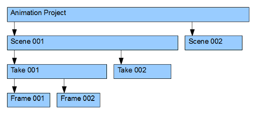
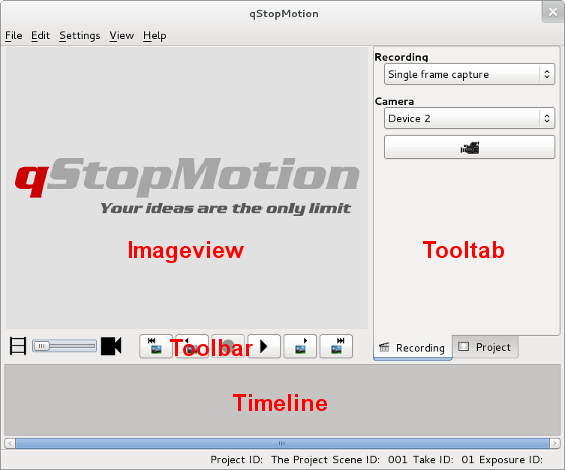
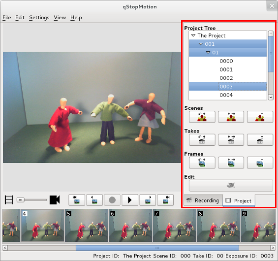

2. Getting started
Once you have installed qStopMotion you can start it by typing qstopmotion in a console or from menues:
- In the Fedora menues you can qStopMotion it by going to ->Multimedia->qStopMotion
- In the Debian menues qStopMotion lies under ->->
- In the Windows menues qStopMotion lies under ->->
When the program is started you will se the following:
Figure 2.1 qStopMotion at startup
Now you have three possibilities to start the using of qStopMotion:
- Start with a new animation project.
- Open the last used animation project. This possibility lacks at the first start of qStopMotion.
- Open a existing Project on the hard disk.
If you select the new project possibility than the following dialog will open:
Figure 2.2 New project dialog
You can change the description for the animation project, the first scene of the project and the first take of the scene.
An animation project is organized in qStopMotion in the following way:
Figure 2.3 Animation project overview

The animation project is the head of the structure. Each animation is segmented in scenes and each scene is segmented in takes. The take contain the singe frames.
When the program is started you will se the following:
Figure 2.4 qStopMotion user interface

To the bottom you have the Timeline where you will see all the pictures in the animation.
The center area is the Imageview where you will get a closer look at your pictures, see the webcamera and preview your animation. To the bottom of the Imageview you have the Toolbar to navigate in the Timeline, take pictures and play the animation.
The right area are the Tooltabs. To switch between the different Tooltabs use the flags to the bottom of the Tooltabs.
qStopMotion starts with the selected Recording Tooltab.
Figure 2.5 The Recording Tooltab
On the top of this tooltab you can select the recording method. All connected video devices contain the next listbox. At first you have to select one of these video devices. Now you can also start the video device with the camera button  .
.
The second Tooltab is the Project Tooltab.
Figure 2.6 The Project Tooltab

On the top of this tooltab you have the project tree containing all scenes, takes and frames of your animation. Than you can see a line of buttons for inserting new scenes , adding new scenes  as well as deleting scenes . The following line of buttons is for inserting new takes , adding new takes as well as deleting takes . With the buttons in the last line you can inserting or adding
pictures from the harddrive as well as deleting frames and scenes
as well as deleting scenes . The following line of buttons is for inserting new takes , adding new takes as well as deleting takes . With the buttons in the last line you can inserting or adding
pictures from the harddrive as well as deleting frames and scenes  .
.